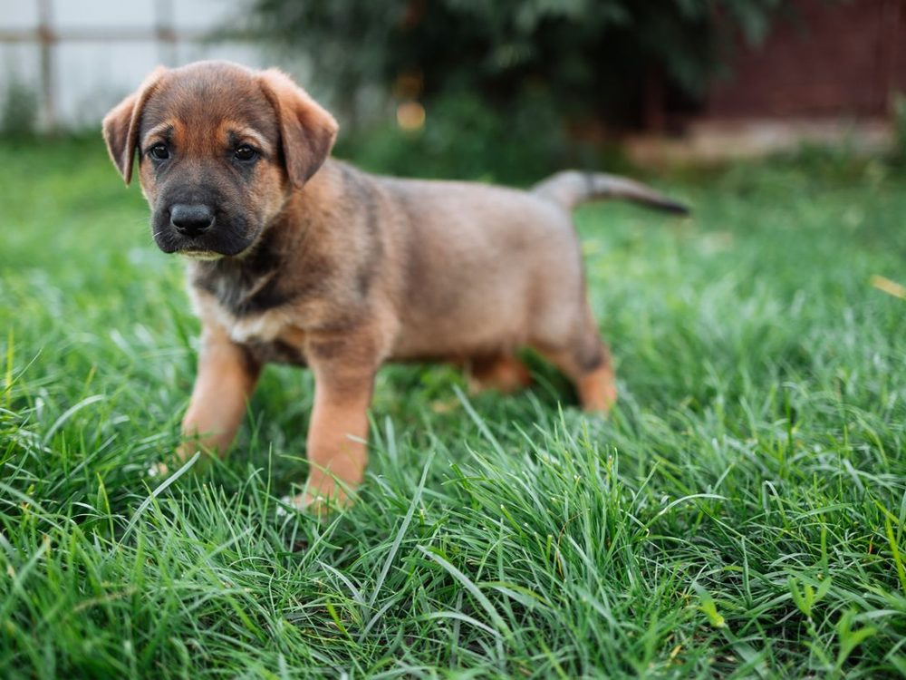

Cosmo Dog Park Dog beach
- Fenced Yes — about 4 fenced acres
- Water Yes — pet drinking fountains, 2 dog washing stations, and a dog lake with beach and dock (lake and beach closed July–November for maintenance)
- Shade Not stated for the fenced dog areas; the park has 4 reservable ramadas with grills
- Small-dog area Not size-based — separate Active and Timid dog areas (West and East active areas rotate closed for turf repair)
- Restrooms Yes — 1 restroom facility
- Hours Daily 5:30 a.m.–10 p.m.; closed Tuesdays 5:30 a.m.–noon for maintenance
A 17-acre park built entirely around dogs and named for Cosmo, Gilbert’s first police K-9. The town says it’s one of the few parks in the nation with a dog beach, with a dock dogs can leap from into the lake. Also: lighting for night use, an obstacle course, a memorial brick walk, a basketball court, a new playground, and Mutt-Mitt waste stations. Limit three dogs per visit. Town page.